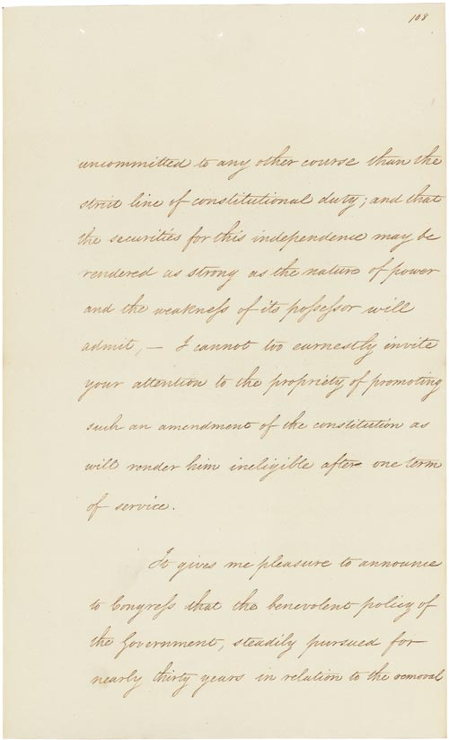

U.S. FOREIGN POLICY / WEEK 03
Expansion, slavery, and war with Mexico
- 1830–1860
- Dr. Murat Toman
U.S. FOREIGN POLICY / WEEK 03
The main idea
- Territorial expansion was closely connected to slavery, the removal of Indigenous peoples, and war with Mexico. More land did not mean equal benefits or lasting political unity.
- A country can gain territory while creating deeper political conflict and harming affected populations. To assess expansion, ask separate questions about land, security, rights, and long-term stability. These measures can point in different directions. A military victory is only one part of the historical judgment.
U.S. FOREIGN POLICY / WEEK 03
Where this week fits in history
| When | Selected event |
|---|---|
| 1803 | Louisiana Purchase |
| 1823 | Monroe Doctrine |
| 1848 | Treaty of Guadalupe Hidalgo |
| 1863 | Emancipation Proclamation |
U.S. FOREIGN POLICY / WEEK 03
History through a source

- This document is evidence of an official statement or decision. Its wording and appearance help us identify the source, but its promises still need to be checked against evidence of actions and results.
- Use the linked transcription or PDF to read the text. Ask who issued it, what it claims, and whose viewpoint is missing.
U.S. FOREIGN POLICY / WEEK 03
Key words explained
- Manifest Destiny: The belief that U.S. territorial expansion was natural, destined, or divinely favored.
- Annexation: The incorporation of territory into a state.
U.S. FOREIGN POLICY / WEEK 03
Key words explained
- Coercion: Pressure that changes choices through threats, force, or imposed costs.
- Legitimacy: The degree to which people consider power or a policy justified and acceptable.
U.S. FOREIGN POLICY / WEEK 03
Manifest Destiny helped justify expansion
- Manifest Destiny was a belief that U.S. expansion was natural or divinely favored. Supporters used it to justify acquiring land.
- The idea did not explain every decision by itself: interests in land, slavery, trade, and political power also mattered. Americans disagreed about both the goals and the costs of expansion.
U.S. FOREIGN POLICY / WEEK 03
Removal denied Indigenous peoples’ choices
- Official arguments for Indian removal sometimes presented it as protection or assistance. Such language can hide coercion and the loss of land and political authority.
- Indigenous peoples were political actors with their own institutions and strategies. A government’s description of a policy should be compared with the experiences of those affected.
U.S. FOREIGN POLICY / WEEK 03
War abroad sharpened conflict at home
- The Mexican-American War connected a dispute over territory and borders with arguments about the future of slavery. Gaining land raised the question of whether slavery would expand into it.
- Military victory therefore did not settle the political conflict. It helped create new domestic struggles over the character of the republic.
U.S. FOREIGN POLICY / WEEK 03
A peace treaty reflects unequal bargaining power
- The Treaty of Guadalupe Hidalgo formally ended the war and changed territorial control. A signed agreement establishes legal commitments, but it does not make the bargaining conditions equal.
- Its provisions about people and property must be studied alongside evidence about what happened afterward. The text alone cannot prove that promised rights were protected.
U.S. FOREIGN POLICY / WEEK 03
Success depends on whose interests we measure
- A country can gain territory while creating deeper political conflict and harming affected populations. To assess expansion, ask separate questions about land, security, rights, and long-term stability.
- These measures can point in different directions. A military victory is only one part of the historical judgment.
U.S. FOREIGN POLICY / WEEK 03
Politics at home and abroad
- At home: Expansion intensified disputes over slavery and the political balance between states.
- Abroad: The United States pursued territory through removal, bargaining, and war.
- The connection: domestic support and resources affect what leaders can promise abroad. International events can change domestic priorities.
U.S. FOREIGN POLICY / WEEK 03
How power worked
| Form of influence | How it operated in this week |
|---|---|
| Hard power | Military force and unequal bargaining changed control of land. |
| Soft power | Claims about democracy and destiny sought support, but those claims did not make coercion legitimate to affected peoples. |
- Persuasive rhetoric for one audience may destroy legitimacy with another; treaties can codify coercion.
U.S. FOREIGN POLICY / WEEK 03
A worked explanation
- Can a territorial victory create a serious political problem for the winner?
- Yes. New territory intensified disputes about slavery and political power. Gains on a map can coexist with conflict, injustice, and instability.
- Why this matters: A country can gain territory while creating deeper political conflict and harming affected populations. To assess expansion, ask separate questions about land, security, rights, and long-term stability. These measures can point in different directions. A military victory is only one part of the historical judgment.
U.S. FOREIGN POLICY / WEEK 03
Practice with the documents
- Find how Jackson’s removal message describes the policy’s supposed benefits.
- Find one promise concerning people or rights in the Mexican peace treaty.
- Name a person or community whose experience you would need to check before accepting those claims.
U.S. FOREIGN POLICY / WEEK 03
How to support an answer
- A claim is what you argue. Evidence is a specific passage, event, or finding that supports it. Explain the connection between them.
- Example structure: “The document claims ____. This suggests ____. It cannot by itself show ____.”
- A speech can establish what a speaker said. Evidence of actions and consequences is needed to judge whether the policy worked.
U.S. FOREIGN POLICY / WEEK 03
What to remember
- Manifest Destiny legitimized choices that remained contested and contingent.
- Removal linked domestic settlement politics to contested sovereignty.
- Territorial gain intensified the domestic conflict over slavery.
- A treaty can formalize coercive outcomes without resolving questions of justice or implementation.
U.S. FOREIGN POLICY / WEEK 03
Reading guide
- Jackson’s Message on Indian Removal (1830) A document from the period. Use it to identify what officials claimed or authorized, then check other evidence for the consequences. External source page; access may vary.
- Treaty of Guadalupe Hidalgo (1848) A document from the period. Use it to identify what officials claimed or authorized, then check other evidence for the consequences. External source page; access may vary.
Jackson’s Message on Indian Removal (1830) — External source page; access may vary.
Treaty of Guadalupe Hidalgo (1848) — External source page; access may vary.
U.S. FOREIGN POLICY / WEEK 03
Reading guide
- Texas Annexation, War, and the Treaty of Guadalupe-Hidalgo A retired historical background essay. Use it for context, and compare its account with scholarship and other perspectives. External source page; access may vary.
- From Colony to Superpower: U.S. Foreign Relations since 1776 A scholarly narrative companion for historical periods. Select the relevant period; no unverified page assignments are supplied. Publisher record; full text may require institutional access.
Texas Annexation, War, and the Treaty of Guadalupe-Hidalgo — External source page; access may vary.
Office of the Historian Milestones: retired series, retained online for historical reference; not a current-policy source.
From Colony to Superpower: U.S. Foreign Relations since 1776 — Publisher record; full text may require institutional access.
U.S. FOREIGN POLICY / WEEK 03
Video and audio guide
- Lecture 6 — Expansion and Slavery: Legacies of the Mexican War and the Compromise of 1850 Connect territorial expansion and the Mexican War to the politics of slavery.
- Lecture 6 — Expansion and Slavery: Legacies of the Mexican War and the Compromise of 1850 (audio edition) Follow the connections between war, land, and competing visions of political membership.
Lecture 6 — Expansion and Slavery: Legacies of the Mexican War and the Compromise of 1850 — Free provider page; external player may require consent or be region-dependent
University lecture; video, audio, and transcript. Audio is an alternative format, not an additional assignment.
Lecture 6 — Expansion and Slavery: Legacies of the Mexican War and the Compromise of 1850 (audio edition) — Free provider page; external player may require consent or be region-dependent
Audio edition of the same lecture; choose either video or audio.
U.S. FOREIGN POLICY / WEEK 03
Using the sources carefully
- Linked readings and media offer particular viewpoints. Compare them with the lesson and other evidence. Some sources require institutional access.
- Media links and descriptions were checked when the course resources were prepared. Full playback was not tested.
- The Yale audio and video entries are two formats of the same lecture. Choose one format rather than treating both as separate assignments.